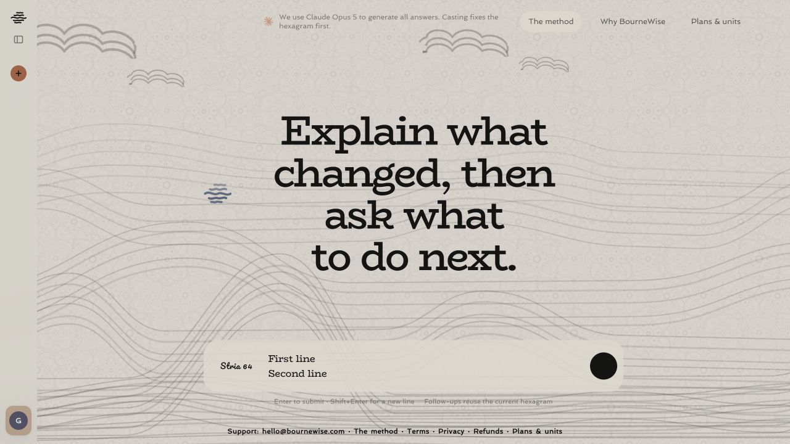
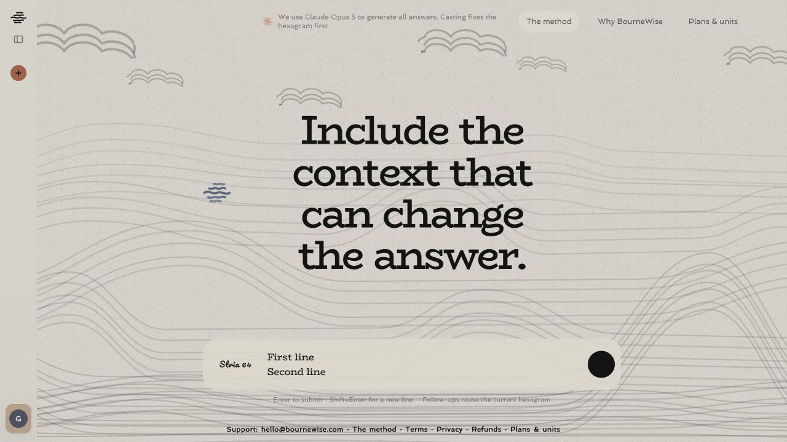
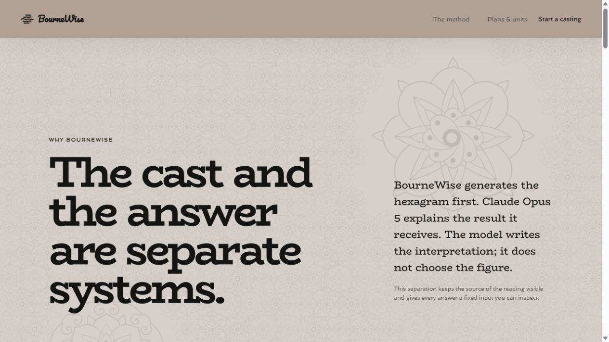
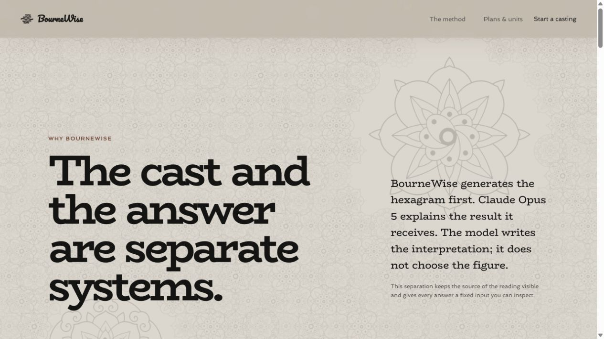

<!doctype html>
<html lang="en">
<meta charset="utf-8">
<meta name="viewport" content="width=device-width,initial-scale=1">
<title>Texture scale comparison</title>
<style>
  *{box-sizing:border-box}body{margin:0;background:#171716;color:#f4f0e7;font:14px/1.4 system-ui,sans-serif}
  main{width:min(620px,100%);margin:auto;padding:18px;display:grid;gap:18px}h1{margin:0;font-size:18px}
  figure{margin:0}figcaption{margin:0 0 7px;font-weight:650;letter-spacing:.04em}img{display:block;width:100%;height:auto;border-radius:8px}
</style>
<main>
  <h1>Texture scale and visibility</h1>
  <figure><figcaption>App · previous 360px repeat</figcaption></figure>
  <figure><figcaption>App · denser 240px repeat</figcaption></figure>
  <figure><figcaption>Text page · previous visibility</figcaption></figure>
  <figure><figcaption>Text page · stronger visibility</figcaption></figure>
</main>
</html>
